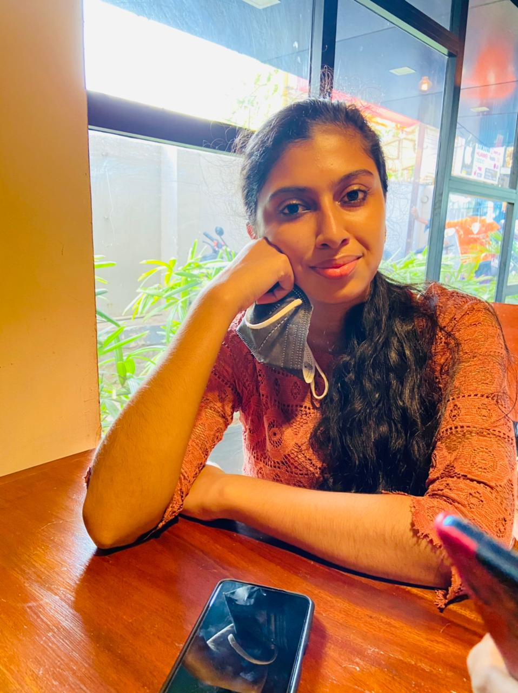
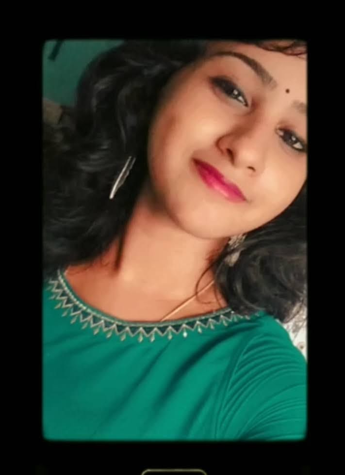
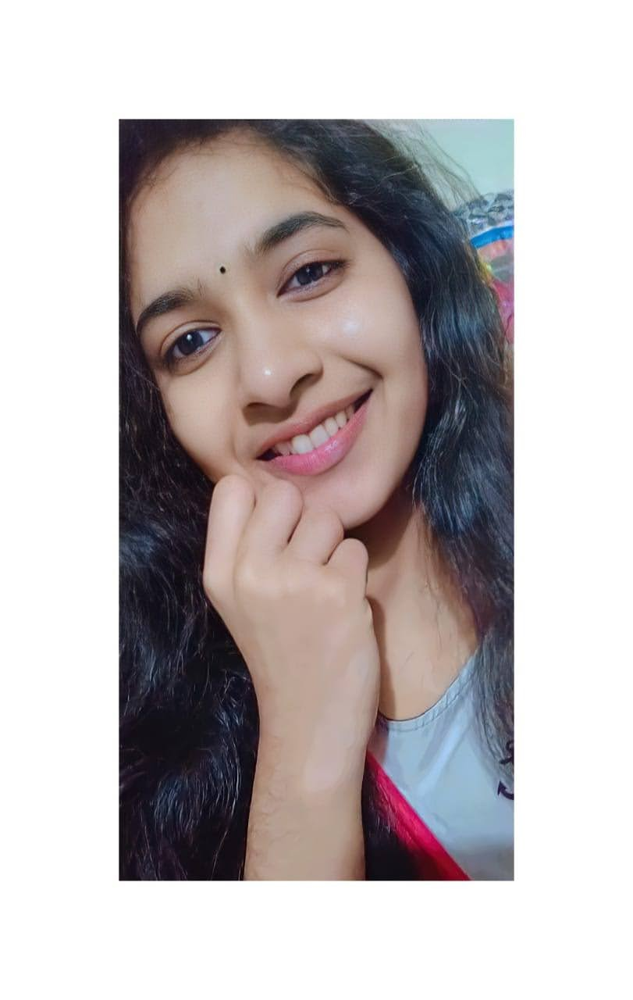

SheHack
Our Team
Our team consist of vibrant first year girls pursuing BTech in IT at LBSITW, who are ready to face any challenges without any hesitation. We are really eager to take part in the Shehack event conducted by Tinkerhub. We came to know that Tinkerhub provide more oppurtunities for the students to enhance their skills in coding and other areas.
Our Shehack vision and mission
- 
Devarenjini P
Being a part of Shehacks would be a great opportunity which I would not like to miss.I am sure being part of this program would help build my skills in web and app development. I look forward to this program to increase my knowledge by learning about new topics and build some cool projects.
- 
Swetha V Chandran
Our college has just started the Tinkerhub community.I came to know that Tinkerhub provide the students to learn from other members of Tinkerhub. It really provides a great platform to learn everything related to coding and I really love to grab that opportunity to learn. Shehack is the first event that I am participating after joining Tinkerhub community.My mission is to learn more and to realize my abilities and to colabrate to bulid more products.My vision is to spread the knowledge and to help others in their own needs.
- 
Keerthi Krishna
I registered for Shehack to get an experience of leraning new aspects of coding and technology. This event conducted by Tinkerhub does give me an opportunity to experience new things around us. As I said my mission is to discover, develop our ideas and to advance our skills.My vision is to ,to exchange my knowledge and to enhance creative thinking.
Shehack is an excellent opportunity to promote women to come forward to showcase their talents and to enhance their skills and knowledge on coding. We truly look forward for amazing events like this in the future too.We will surely try to bring out our best skills and knowledge in this event and hope that you would provide us enough support and guidance to exceed to the next round.